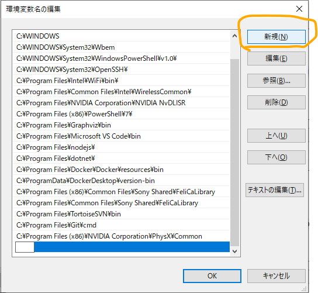

Geth
GethはGoで書かれたEthereumクライアントです。 つまり、Gethを実行すると、コンピュータがEthereumのノードに変わるということです。 イーサリアムはピアツーピアのネットワークで、情報は中央のサーバーによって管理されるのではなく、ノード間で直接共有されます。 ノードは、イーサリアムのネイティブ・トークンであるイーサ（ETH）で報われるため、ピアに送信するトランザクションの新しいブロックを生成するために競争します。 新しいブロックを受信すると、各ノードはそれが有効であることを確認し、データベースに追加します。一連の個別のブロックは「ブロックチェーン」と呼ばれる。各ブロックで提供される情報は、Gethがその「状態」、つまりイーサリアム上の各アカウントのイーサーの残高を更新するために使用される。アカウントには、外部所有アカウント（EOA）とコントラクトアカウントの2種類があります。コントラクトアカウントは、取引を受けるとコントラクトコードを実行する。EOAは、ユーザーが取引に署名し、提出するためにローカルに管理するアカウントである。各EOAは公開鍵と秘密鍵のペアであり、公開鍵はユーザーの一意のアドレスを導き出すために使用され、秘密鍵はアカウントを保護し、メッセージに安全に署名するために使用されます。そのため、イーサリアムを利用するためには、まずEOA（以下、「アカウント」）を生成することが必要である。このチュートリアルでは、アカウントの作成、エーテルによる資金調達、および別のアドレスへの送金について説明します。
イーサリアムのノード、クライアントツール
- 公式サイト - https://geth.ethereum.org/
- Windows用 https://gethstore.blob.core.windows.net/builds/geth-windows-amd64-1.10.15-8be800ff.exe
インストール方法
Windowsキー+R>詳細設定>環境変数
編集を選択- 
新規を選択- Gethをインストールした場所を指定 → ※デフォルトだとここを指定
C:\Program Files\Geth -
登録後は
OKを押して閉じる -

geth -helpと入力すると、コマンド説明が表示されればインストール完了
プライベートネットワークの構築方法
参考資料
- NTTデータ先端技術株式会社のブロックチェーンの技術記事（2016年で古いが濃厚）
- ブロックチェーンEthereum入門 1 - https://www.intellilink.co.jp/column/fintech/2016/051300.aspx
- ブロックチェーンEthereum入門 2 - https://www.intellilink.co.jp/column/fintech/2016/060600.aspx
- ブロックチェーンEthereum入門 3 - https://www.intellilink.co.jp/column/fintech/2016/061700.aspx
-
ブロックチェーンEthereum入門 4 - https://www.intellilink.co.jp/column/fintech/2016/062400.aspx
-
gethコマンド まとめ - https://zenn.dev/endo/articles/a8d22d9b243caf2f1134
-
gethのネットワーク関連
- プライベート・ネットに接続する - https://book.ethereum-jp.net/first_use/connect_to_private_net
- 【保存版】Gethを使って、EthereumのPrivate Networkを作ってみよう！ - https://note.com/standenglish/n/nd186bd57e102
- Ethereumのテストネットワーク - https://zenn.dev/kihonkei/articles/7750e99468a0ea
プロトコル
- Inter Process Communication (IPC) - 同じコンピュータ間のプロセス間通信
- Remote Procedure Calls (RPC) - TCP/HTTPプロトコルに基づく
- Web Sockets (WS) - ソケット通信
プロトコルの使用
イーサリアムネットワーク
- イーサリアム → アプリケーション開発やデプロイのためのオープンソースプラットホーム
- イーサリアムは相互に接続された多数のコンピュータにバックアップされている
- 分散台帳にデータを蓄積します。
- 開発したアプリケーションはネットワーク上にデプロイ
イーサリアムのメインネットワーク種類
- Homestead
- Frontier
イーサリアムのテストネットワーク種類
- Ropsten - PoW（Proof of Work）を使用しているため本番環境に近い
- Kovan - PoA（Proof of Authority）を採用しているため比較的安定
- Ronkeby - PoA（Proof of Authority）を採用しているため比較的安定
ウォレット
mistウォレット - https://github.com/ethereum/mist/releases